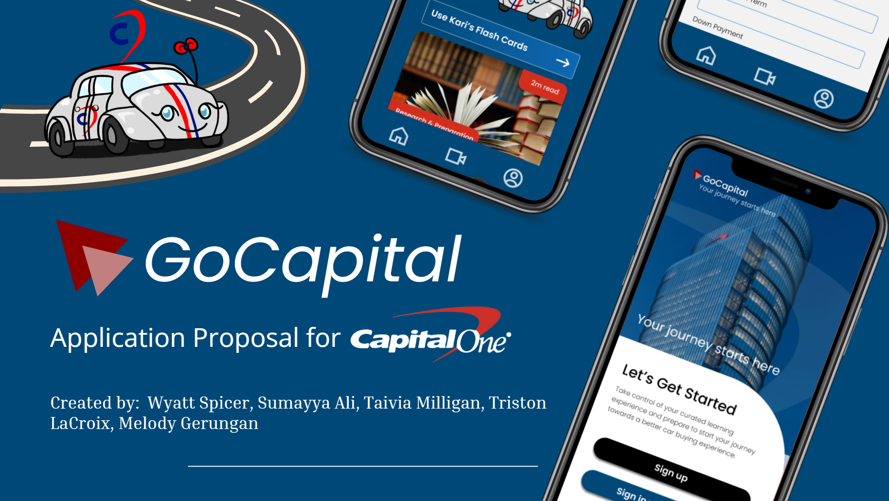

GoCapital - UX Case Study
A full UX case study focused on helping first-time car buyers navigate research, comparison, and decision stages with more confidence.
Click to scroll to the complete case study section below.
This page showcases UX projects built through research, prototyping, and iterative design. Full case studies will be added as they are completed.
A full UX case study focused on helping first-time car buyers navigate research, comparison, and decision stages with more confidence.
Click to scroll to the complete case study section below.
A UX exploration for a movie discovery or streaming concept. This section links to an embedded slide deck you can flip through.
Click to jump to the embedded presentation.
A research-focused project centered on LGBTQ+ experiences or perspectives, summarized in a dedicated presentation.
Click to view the research deck embedded below.
.GoCapital Auto Quest is a UX case study focused on improving the car-buying experience for first-time buyers. This project includes user research, interview synthesis, personas, journey mapping, wireframes, and high-fidelity prototypes. The full write-up will cover the problem space, the research insights that shaped the design, and the final solution aimed at reducing buyer stress and decision fatigue.
Placeholder overview for GoCapital. Describe the context of the project: who the users are, what kind of product you were designing, and the core challenge you set out to solve.
You can mention that this project focuses on first-time car buyers, their anxieties around budgeting and financing, and the need for clearer guidance through the process.
Design a digital tool or interactive experience that meets first time car buyers where they are to demystify the car buying journey. Uncover perceptions, concerns, and assumptions first time buyers might have about purchasing a car. Design for meeting their needs in new and interesting ways, while helping create an understanding of the true cost of ownership and make informed decisions with confidence.
GoCapital will focus on a specefic sybset of young adults, specifically college-aged individuals who are planning or in the process of buying their first car.

“Honestly, I think of them as overwhelming and sometimes intimidating. I associate dealerships with high-pressure sales tactics and hidden fees, which can make the process stressful. At the same time, I know they're necessary for access to new and certified cars, so it's a mix of caution and practicality.”
“I'd want something comprehensive but clear. It should include: Step-by-step guides for research, budgeting, and negotiating cost breakdowns including insurance, maintenance, and hidden fees and comparison tools for cars, dealerships, and financing options”
“It's a mix. Official sources and reputable automotive sites feel trustworthy, but forums and social media advice can be hit or miss. Sometimes the information conflicts, which makes it harder to know what's accurate.”
We conducted a survey focused primarily on college students who were interested in, currently in the process of, or had purchased a vehicle in the past. We surveyed a total of 110 students and found a couple of interesting statistics:
“It was emotional and a financially stressful process.”
“Yeah, definitely. I use apps all the time to simplify things—like budgeting apps to track expenses, navigation apps to find faster routes, and even apps that remind me about maintenance or payments. They save time and help me stay organized without having to think about every little detail.”
“Yeah, mostly about getting scammed or stuck with a bad deal. I also worried about being talked into something more expensive than I could afford.”
“My family members accompanied me when purchasing my first car, it offered a lot of emotional support.”
"I have done a mix of things. I have spent time reading online articles and watching videos about car buying, researched financing and loans, and asked my family for guidance. Friends who recently bought cars also shared their experiences, which gave me some practical tips.”
“Interest rate, Apr, stuff like that. Yeah, just generally I feel like. I don't even know how I would describe it to someone else.”
This persona represents Crystal Nguyen, a junior at UTD who relies on public transportation and needs a dependable car for her weekly commute. The profile outlines her frustrations with car buying, including pricing, insurance, and negotiation, along with the motivations that drive her search, such as independence, helping her family, and wanting a long-lasting vehicle. Her scenario explains how she discovers the app while trying to make sense of confusing information online, and her personality traits give insight into how she approaches decisions. Overall, Crystal helps guide design choices by highlighting the needs and concerns of first-time car buyers.
“First-time car buyers often face uncertainty and confusion during the purchasing process. Our goal is to create an app that delivers clear definitions, practical calculators, and trusted resources to simplify this experience. By empowering users with knowledge and personalized insights, we aim to build confidence and help them find vehicles that truly fit their needs and lifestyles.”
The FTC's qualitative study on first-time car buyers revealed widespread confusion, hidden costs, and a lack of transparency in the buying process. Most participants did not realize that add-on products (like warranties or GAP insurance) could be negotiated, and some even believed they had received them for free, only to later find hidden charges in their paperwork.
The first step for car buyers according to CarGurus requires research about fair market value through their Instant Market Value (IMV) tool and price comparison at local dealerships and vehicle history reports.
State Farm advises buyers to spend no more than 10-15% of their monthly income on car payments, while also considering insurance costs, fuel expenses, vehicle taxes, and maintenance fees.
As car prices have increased, so have the related expenses and maintenance. The effect politics have had on car expenses has increased the amount of auto loans being taken out.
Car owners should use their bonus money and tax refunds to pay down principal amounts and make biweekly payments instead of monthly payments, and consider refinancing their loans for better interest rates.
Experts recommend that buyers check their credit scores and determine the value of their trade-in before visiting Kelley Blue Book or Consumer Reports for unbiased information about different dealerships.
Buyers are unaware about hidden fees and are confused about terms
Some buyers suffer with anxiety and making big decisions
Most buyers prefer online purchasing rather than visiting brick and morter stores
When visiting a dealership, most buyers are unaware if they should practice negotiation
Inform user of the most relevant information related to the car buying process
Making the car buying process less stressful for the user.
Going above and being the traditional car buying experience while building confidence with dealerships
Features will have their own section in the menu after clicking the homepage, which explains the terms / glossary to be prepared for the car buying process
With the help of our car mascot, Kari, users will be able to chat with an AI assisted bot and be able to answers questions that may not have been answered
The car review will show the car, an estimate of the car with credit score, and an image of the car. The calculator estimates the payment + both have options to locate nearby banks and dealerships
We planned to utilize contrast in colors to enhance readability, keep balance, and place emphasis on different elements.
We planned to use hierarchy to shift the user's focus to certain elements. We plan to showcase this through typography, color, and design elements.
Our application is very information-heavy, and we plan to use negative space to give users space to take in information.
Proportion is used to make the application aesthetically pleasing and balanced.
After ideating, we decided to include a lower navigation bar and hamburger menu for usability. We wanted to focus on informational content and the GoCapital's main goals.
This user flow illustrates how first-time car buyers navigate through the GoCapital app, beginning at login and moving through core features such as the Home Page, personalized profile options, a “For You” discovery feed, and an educational menu system. It maps out decision points and pathways that guide users toward key actions—like editing their profile, accessing calculators, viewing informational videos, and exploring deals—highlighting how the app supports both learning and decision-making throughout the car-buying journey.
These screens show the main structure of the GoCapital app, starting with a simple login page that leads users into the home dashboard. From there, the menu provides quick access to key learning tools like terms, step-by-step guidance, AI help, calculators, and bank or dealer information. Each section is designed to break down the car-buying process into smaller, easier steps, helping first-time buyers understand important terms, follow a clear workflow, and move through the process at their own pace.

These screens highlight the main tools inside the GoCapital app. Users can chat with the AI assistant for quick questions, use a built-in calculator for budgeting, look up bank and dealer contacts, browse educational videos, and manage their profile settings. Each feature is designed to support first-time car buyers with simple, easy-to-understand resources as they work through the car-buying process.
This graphic compares the GoCapital logo with Capital One's branding, showing how the student-designed logo draws inspiration from Capital One's color palette, curved motion line, and overall style while creating its own distinct identity for the project.
This style guide shows the visual foundations for the GoCapital app. It uses the Poppins typeface for clean, readable text, paired with a color palette inspired by Capital One's blue and red branding. Accent colors support contrast and hierarchy throughout the interface. The Siemens Industrial Experience Icon set reflects a simple, modern line style that keeps the UI consistent and easy to navigate.
Our mascot, designed by Taivia, is named Kari, a playful and friendly car character that brings personality into the project. Kari's red and blue racing stripes, bright headlights, and cheerful expression help make the app feel more welcoming and less intimidating for first-time car buyers.
This collection of Figma screens shows the full GoCapital app prototype, covering the entire user journey from onboarding to everyday use. It includes the login and sign-up flow, home page, educational steps, AI chat, dealer and bank search, calculators, saved items, document upload, and profile settings. The screens work together to show how first-time car buyers can move through the app, get guidance, compare options, and keep track of their progress in one place.
GoCapital's solution gives first-time car buyers a simple way to understand their finances and track their progress while preparing to purchase a vehicle. The app guides users from onboarding into tools that help estimate payments, compare loan options, and break down costs like insurance and maintenance. A personalized dashboard shows where they are in the buying process and what steps come next, making it easier to stay organized and confident throughout the journey.
GoCapital's solution gives first-time car buyers a simple way to understand their finances and track their progress while preparing to purchase a vehicle. The app guides users from onboarding into tools that help estimate payments, compare loan options, and break down costs like insurance and maintenance. A personalized dashboard shows where they are in the buying process and what steps come next, making it easier to stay organized and confident throughout the journey.
This section outlines the key performance indicators for GoCapital by focusing on three areas that define success. From the user side, success means first-time car buyers feel confident, informed, and prepared throughout the car-buying process. For industry partners, success shows up as more knowledgeable customers, smoother interactions, and stronger trust. On a broader level, success contributes to financial literacy and reduces the risk of predatory practices, helping young and first-time buyers make major financial decisions with clarity and fairness.
Goal: To increase user confidence for buying a car / the car buying process
With an algorithimic approach that provides similar features to Instagram Reels or TikTok, with an explore page of videos that are educational to watch and helpful to learn about the carbuying process, it will get more new car buyers to be more confident and start going to the dealership, increasing it about 20% of the normal confidence rate among young adults within the first year.
Goal: Have a decent scaled and sustainable product
By 2026, we plan on having a consistent year to year growth of app downloads and get more ROI by about 5% bwithin 4 years.
Goal: Have a personalized onboarding as well as learning experience
75% of users set up with Capital One will have a personalized setup and 60% return rate within the first week.
Goal: Help users feel prepared about the car buying process
There will be a 20% increase of users who are knwoledgeable , which increases their confiedence and preparedness and post learning assesments.
At the end of the day, the problem is pretty clear. First-time car buyers, especially students, are stepping into a process that feels confusing and intimidating because they do not have the information or confidence they need. GoCapital works to change that by giving them a simple, transparent, and personalized tool that helps them move through each part of buying a car. It helps students compare costs, get ready for conversations at the dealership, and understand what long-term ownership really looks like.
By making everything easier to follow, GoCapital turns a stressful experience into something manageable. This solution gives young buyers the practical support they have been asking for: clear information, better preparation, and the ability to make confident, informed decisions.
MovieHouse is an all-in-one app designed to replace the overwhelming number of disconnected tools used in dine-in movie theaters. Instead of juggling separate systems for scheduling, time punches, radios, training, payroll, theater assignments, guest alerts, and analytics, MovieHouse brings everything into one unified app.
The project focuses on real problems you experienced during nearly a decade of restaurant work: redundant apps, constant logins, inefficiency, and poor communication. Through sketches, wireframes, prototypes, and user scenarios, the app centralizes daily tasks for servers and managers, making shifts easier, faster, and less stressful for everyone.
This project explores the experiences of LGBTQIA+ students on campus through secondary research, surveys, and interviews. The work identifies common issues such as feeling unsafe, lack of community, inadequate school support, and barriers to self-expression.
This project helps Law Enforcement better communicate with the PEOPLE they protect and serve.
EchoBridge by Wyatt Spicer